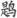
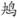
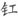
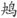

目 录
大陆版前言
台北版前言
徽宗皇帝 宴山亭（裁剪冰绡）
钱惟演 木兰花（城上风光莺语乱）
范仲淹 苏幕遮（碧云天）
御街行（纷纷坠叶飘香砌）
张 先 千秋岁（数声

）
菩萨蛮（哀筝一弄《湘江曲》）
醉垂鞭（双蝶绣罗裙）
一丛花（伤高怀远几时穷）
天仙子（《水调》数声持酒听）
青门引（乍暖还轻冷）
晏 殊 浣溪沙（一曲新词酒一杯）
浣溪沙（一向年光有限身）
清平乐（红笺小字）
清平乐（金风细细）
木兰花（燕鸿过后莺归去）
木兰花（池塘水绿风微暖）
木兰花（绿杨芳草长亭路）
踏莎行（祖席离歌）
踏莎行（小径红稀）
蝶恋花（六曲栏杆偎碧树）
韩 缜 凤箫吟（锁离愁、连绵无际）
宋 祁 木兰花（东城渐觉风光好）
欧阳修 采桑子（群芳过后西湖好）
诉衷情（清晨帘幕卷轻霜）
踏莎行（候馆梅残）
蝶恋花（庭院深深深几许）
蝶恋花（谁道闲情抛弃久）
蝶恋花（几日行云何处去）
木兰花（别后不知君远近）
浪淘沙（把酒祝东风）
青玉案（一年春事都来几）
柳 永 曲玉管（陇首云飞）
雨霖铃（寒蝉凄切）
蝶恋花（竚倚危楼风细细）
采莲令（月华收）
浪淘沙慢（梦觉透窗风一线）
定风波（自春来、惨绿愁红）
少年游（长安古道马迟迟）
戚 氏（晚秋天）
夜半乐（冻云黯淡天气）
玉蝴蝶（望处雨收云断）
八声甘州（对潇潇暮雨洒江天）
迷神引（一叶扁舟轻帆卷）
竹马子（登孤垒荒凉）
王安石 桂枝香（登临送目）
千秋岁引（别馆寒砧）
王安国 清平乐（留春不住）
晏幾道 临江仙（梦后楼台高锁）
蝶恋花（梦入江南烟水路）
蝶恋花（醉别西楼醒不记）
鹧鸪天（彩袖殷勤捧玉钟）
生查子（关山魂梦长）
木兰花（东风又作无情计）
木兰花（秋千院落重帘暮）
清平乐（留人不住）
阮郎归（旧香残粉似当初）
阮郎归（天边金掌露成霜）
六幺令（绿阴春尽）
御街行（街南绿树春饶絮）
虞美人（曲栏杆外天如水）
留春令（画屏天畔）
思远人（红叶黄花秋意晚）
苏 轼 水调歌头（明月几时有）
水龙吟（似花还似非花）
永遇乐（明月如霜）
洞仙歌（冰肌玉骨）
卜算子（缺月挂疏桐）
青玉案（三年枕上吴中路）
临江仙（夜饮东坡醒复醉）
定风波（莫听穿林打叶声）
江城子（十年生死两茫茫）
贺新郎（乳燕飞华屋）
秦 观 望海潮（梅英疏淡）
八六子（倚危亭）
满庭芳（山抹微云）
满庭芳（晓色云开）
减字木兰花（天涯旧恨）
浣溪沙（漠漠轻寒上小楼）
阮郎归（湘天风雨破寒初）
晁端礼 绿头鸭（晚云收）
赵令畤 蝶恋花（欲减罗衣寒未去）
蝶恋花（卷絮风头寒欲尽）
清平乐（春风依旧）
晁补之 水龙吟（问春何苦匆匆）
忆少年（无穷官柳）
洞仙歌（青烟幂处）
晁冲之 临江仙（忆昔西池池上饮）
舒 亶 虞美人（芙蓉落尽天涵水）
朱 服 渔家傲（小雨纤纤风细细）
毛 滂 惜分飞（泪湿阑干花着露）
陈 克 菩萨蛮（赤栏桥尽香街直）
菩萨蛮（绿芜墙绕青苔院）
李元膺 洞仙歌（雪云散尽）
时 彦 青门饮（胡马嘶风）
李之仪 谢池春（残寒消尽）
卜算子（我住长江头）
周邦彦 瑞龙吟（章台路）
风流子（新绿小池塘）
兰陵王（柳阴直）
琐窗寒（暗柳啼鸦）
六 丑（正单衣试酒）
夜飞鹊（河桥送人处）
满庭芳（风老莺雏）
过秦楼（水浴清蟾）
花 犯（粉墙低）
大 酺（对宿烟收）
解语花（风销绛蜡）
蝶恋花（月皎惊乌栖不定）
解连环（怨怀无托）
拜星月慢（夜色催更）
关河令（秋阴时晴渐向暝）
绮寮怨（上马人扶残醉）
尉迟杯（隋堤路）
西 河（佳丽地）
瑞鹤仙（悄郊原带郭）
浪淘沙慢（昼阴重）
应天长（条风布暖）
夜游宫（叶下斜阳照水）
贺 铸 青玉案（凌波不过横塘路）
感皇恩（兰芷满汀洲）
薄 幸（淡妆多态）
浣溪沙（不信芳春厌老人）
浣溪沙（楼角初消一缕霞）
石州慢（薄雨收寒）
蝶恋花（几许伤春春复暮）
天门谣（牛渚天门险）
天 香（烟络横林）
望湘人（厌莺声到枕）
绿头鸭（玉人家）
张元幹 石州慢（寒水依痕）
兰陵王（卷珠箔）
叶梦得 贺新郎（睡起流莺语）
虞美人（落花已作风前舞）
汪 藻 点绛唇（新月娟娟）
刘一止 喜迁莺（晓光催角）
韩 疁 高阳台（频听银签）
李 邴 汉宫春（潇洒江梅）
陈与义 临江仙（高咏楚词酬午日）
临江仙（忆昔午桥桥上饮）
蔡 伸 苏武慢（雁落平沙）
柳梢青（数声
）
周紫芝 鹧鸪天（一点残
欲尽时）
踏莎行（情似游丝）
李 甲 帝台春（芳草碧色）
李重元 忆王孙（萋萋芳草忆王孙）
万俟咏 三 台（见梨花初带夜月）
徐 伸 二郎神（闷来弹鹊）
田 为 江神子慢（玉台挂秋月）
曹 组 蓦山溪（洗妆真态）
李 玉 贺新郎（篆缕消金鼎）
廖世美 烛影摇红（霭霭春空）
吕滨老 薄 幸（青楼春晚）
鲁逸仲 南 浦（风悲画角）
岳 飞 满江红（怒发冲冠）
张 抡 烛影摇红（双阙中天）
程 垓 水龙吟（夜来风雨匆匆）
张孝祥 六州歌头（长淮望断）
念奴娇（洞庭青草）
韩元吉 六州歌头（东风着意）
好事近（凝碧旧池头）
袁去华 瑞鹤仙（郊原初过雨）
剑器近（夜来雨）
安公子（弱柳千丝缕）
陆 淞 瑞鹤仙（脸霞红印枕）
陆 游 卜算子（驿外断桥边）
陈 亮 水龙吟（闹花深处楼台）
范成大 忆秦娥（楼阴缺）
眼儿媚（酣酣日脚紫烟浮）
霜天晓角（晚晴风歇）
辛弃疾 贺新郎（绿树听鹈
）
念奴娇（野棠花落）
汉宫春（春已归来）
贺新郎（凤尾龙香拨）
水龙吟（楚天千里清秋）
摸鱼儿（更能消、几番风雨）
永遇乐（千古江山）
木兰花慢（老来情味减）
祝英台近（宝钗分）
青玉案（东风夜放花千树）
鹧鸪天（枕簟溪堂冷欲秋）
菩萨蛮（辛弃疾书江西造口壁）
姜 夔 点绛唇（燕雁无心）
鹧鸪天（肥水东流无尽期）
踏莎行（燕燕轻盈）
庆宫春（双桨莼波）
齐天乐（庾郎先自吟愁赋）
琵琶仙（双桨来时）
八 归（芳莲坠粉）
念奴娇（闹红一舸）
扬州慢（淮左名都）
长亭怨慢（渐吹尽、枝头香絮）
淡黄柳（空城晓角）
暗 香（旧时月色）
疏 影（苔枝缀玉）
翠楼吟（月冷龙沙）
杏花天影（绿丝低拂鸳鸯浦）
一萼红（古城阴）
霓裳中序第一（亭皋正望极）
章良能 小重山（柳暗花明春事深）
刘 过 唐多令（芦叶满汀洲）
严 仁 木兰花（春风只在园西畔）
俞国宝 风入松（一春长费买花钱）
张 镃 满庭芳（月洗高梧）
宴山亭（幽梦初回）
史达祖 绮罗香（做冷欺花）
双双燕（过春社了）
东风第一枝（巧沁兰心）
喜迁莺（月波疑滴）
三姝媚（烟光摇缥瓦）
秋 霁（江水苍苍）
夜合花（柳锁莺魂）
玉蝴蝶（晚雨未摧宫树）
八 归（秋江带雨）
刘克庄 生查子（繁灯夺霁华）
贺新郎（深院榴花吐）
贺新郎（湛湛长空黑）
木兰花（年年跃马长安市）
卢祖皋 江城子（画楼帘幕卷新晴）
宴清都（春讯飞琼管）
潘 牥 南乡子（生怕倚栏杆）
陆 叡 瑞鹤仙（湿云黏雁影）
吴文英 渡江云（羞红颦浅恨）
夜合花（柳暝河桥）
霜叶飞（断烟离绪）
宴清都（绣幄鸳鸯柱）
齐天乐（烟波桃叶西陵路）
花 犯（小娉婷）
浣溪沙（门隔花深旧梦游）
浣溪沙（波面铜花冷不收）
点绛唇（卷尽愁云）
祝英台近（采幽香）
祝英台近（剪红情）
澡兰香（盘丝系腕）
风入松（听风听雨过清明）
莺啼序（残寒正欺病酒）
惜黄花慢（送客吴皋）
高阳台（宫粉雕痕）
高阳台（修竹凝妆）
三姝媚（湖山经醉惯）
八声甘州（渺空烟四远）
踏莎行（润玉笼绡）
瑞鹤仙（晴丝牵绪乱）
鹧鸪天（池上红衣伴倚栏）
夜游宫（人去西楼雁杳）
贺新郎（乔木生云气）
唐多令（何处合成愁）
黄孝迈 湘春夜月（近清明）
潘希白 大 有（戏马台前）
无名氏 青玉案（年年社日停针线）
朱嗣发 摸鱼儿（对西风、鬓摇烟碧）
刘辰翁 兰陵王（送春去）
宝鼎现（红妆春骑）
永遇乐（璧月初晴）
摸鱼儿（怎知他、春归何处）
周 密 高阳台（照野旌旗）
瑶花慢（朱钿宝玦）
玉京秋（烟水阔）
曲游春（禁苑东风外）
花 犯（楚江湄）
蒋 捷 瑞鹤仙（绀烟迷雁迹）
贺新郎（梦冷黄金屋）
女冠子（蕙花香也）
张 炎 高阳台（接叶巢莺）
渡江云（山空天入海）
八声甘州（记玉关踏雪事清游）
解连环（楚江空晚）
疏 影（碧圆自洁）
月下笛（万里孤云）
王沂孙 天 香（孤峤蟠烟）
眉 妩（渐新痕悬柳）
齐天乐（一襟余恨宫魂断）
长亭怨慢（泛孤艇、东皋过遍）
高阳台（残雪庭阴）
法曲献仙音（层绿峨峨）
彭元逊 疏 影（江空不渡）
六 丑（似东风老大）
姚云文 紫萸香慢（近重阳、偏多风雨）
僧 挥 金明池（天阔云高）
李清照 凤凰台上忆吹箫（香冷金猊）
醉花阴（薄雾浓云愁永昼）
声声慢（寻寻觅觅）
念奴娇（萧条庭院）
永遇乐（落日镕金）
作者小传